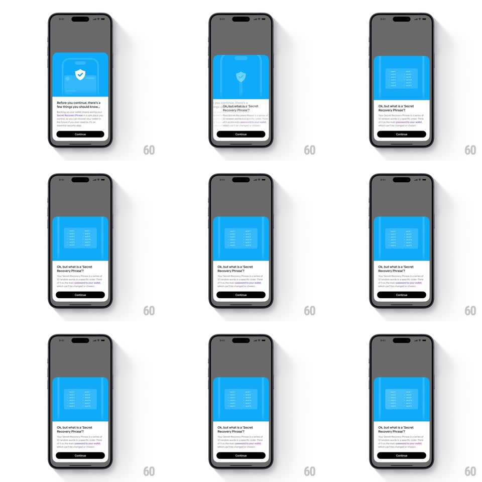

Media
Frame-by-frame

Rebuild this interaction 1:1: Family's shield-to-card flip - tapping Continue on the "Before you continue, there's a few things you should know..." sheet flips the blue header illustration in 3D: the shield-with-check face rotates away around the vertical axis and the recovery-phrase grid face rotates in, while the copy below swaps to "Ok, but what is a 'Secret Recovery Phrase?'"

Rebuild this interaction 1:1: Family's shield-to-card flip - tapping Continue on the "Before you continue, there's a few things you should know..." sheet flips the blue header illustration in 3D: the shield-with-check face rotates away around the vertical axis and the recovery-phrase grid face rotates in, while the copy below swaps to "Ok, but what is a 'Secret Recovery Phrase?'" ## Integration Integration: stack-agnostic spec - springs given as stiffness/damping, timed motions as duration + curve; map every value to your framework and animation library of choice. ## Scene Bottom sheet over a dimmed app: blue illustrated header panel (state A: shield with check badge; state B: 12-word recovery phrase grid), title + body text, Continue button. ## Motion spec Pattern: 3D card flip on the illustration panel with copy swap. - Tap Continue: the blue header panel rotates around its vertical center axis (rotateY 0 -> 180deg, 550ms, ease-in-out) with real perspective (panel narrows and skews through 90deg). - At 90deg the content swaps: the shield face is replaced by the phrase-grid face mid-flip (the classic two-sided card technique). - The flip settles with a tiny spring (spring ~360/26 on the last 30deg, ~150ms) - one small overshoot, no wobble. - Title and body crossfade to the new copy (250ms, starting ~100ms into the flip); the Continue button stays put. - The sheet's height and position never change - only the header's content rotates. ## Calibration - The flip axis is the panel's vertical centerline - never the screen's. - Perspective is essential: at 90deg the panel is a sliver, which hides the face swap. ## Reduced motion Header crossfades between faces (250ms); no rotation. ## Don't miss - The two faces share the same blue background - the flip reads as one card turning, not two panels swapping. - The copy swap lags the flip start - it never changes while the old face is still fully visible.